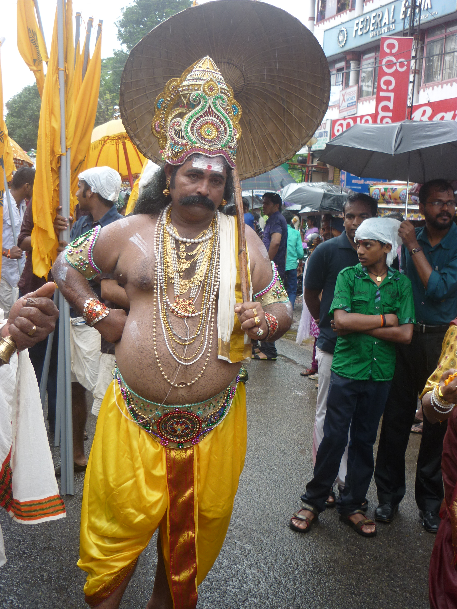

Onam is an ancient harvest festival celebrated in Kerala. It is traditionally associated with the legendary King Mahabali. According to the popular legend, Mahabali was a beloved king whose annual return to Kerala is celebrated during Onam.
Onam is a celebration of prosperity, harvest and togetherness. It is an important cultural festival of Kerala and is celebrated by people across the state.
People decorate their homes with colourful flower arrangements called Pookkalam. Families prepare the traditional Onam Sadya, a vegetarian feast served on a banana leaf. People also take part in traditional games, cultural programs, dances and boat races in different parts of Kerala.